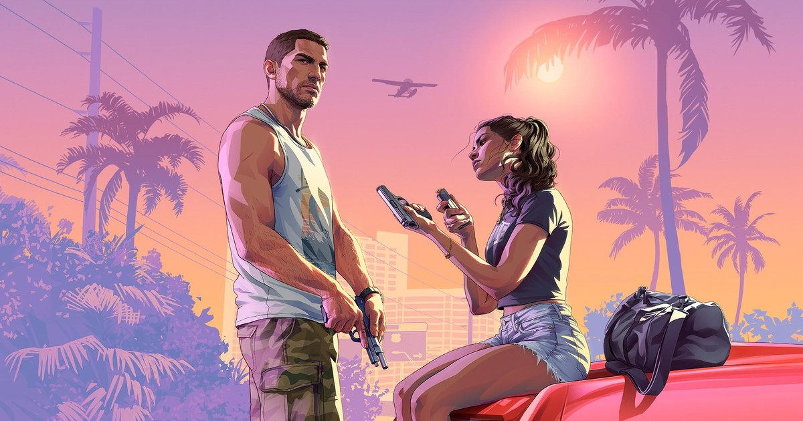

You can now play GTA 6 on a PlayStation Portal — no PS5 required
PlayStation Plus Premium subscribers who own Grand Theft Auto VI can now stream it on PS5 and PlayStation Portal — no 212GB download, and the Portal doesn't need a console at home at all.

Disclosure: this post contains affiliate links. I earn a commission on qualifying purchases.
Grand Theft Auto VI can now be streamed on PlayStation 5 and PlayStation Portal through PlayStation Plus Premium, Sony confirmed on the game's PlayStation Store listing, which now reads "PS5 and PS Portal cloud streaming supported only with Premium subscription." Players first noticed the change on November 23, and outlets including Engadget, Notebookcheck, and Push Square have since confirmed it works.
The Portal is the big winner here. Until this week, the handheld could only reach GTA 6 through Remote Play, which required a PS5 at home switched on. Now the game runs on Sony's servers instead, so a Premium subscriber with a purchased digital copy can play it on the Portal with no console at all — and no waiting on the 212GB download either.
You still have to buy the game
Cloud streaming is not a free copy. GTA 6 has not been added to the PlayStation Plus catalog, and streaming only works with a digital copy you own. The requirements are a PlayStation Plus Premium subscription, a purchased copy, an adult account, and a country where cloud streaming is supported, including the US, Canada, Japan, and most of Europe.
The connection bar is modest: a session starts at 5 Mbps, with 720p needing at least 7 Mbps and 1080p at least 13 Mbps over Portal Wi-Fi. On PS5, Sony recommends 52 Mbps for 4K streaming. Push Square tried the stream on a PS5 in the UK and reported it is "working well."
The Xbox side was already there — and the exclusivity rumor was wrong
Xbox players got here first: GTA 6 has been streamable through Xbox Cloud Gaming since November 19, and on the aging Xbox One it is the only way to play at all, since there is no native version for that console. But Xbox streaming comes out of a monthly allowance — Game Pass Ultimate subscribers get a maximum of 15 hours a month — while PlayStation's solution puts no cap on streaming hours for Premium members.
The PlayStation arrival also kills a rumor from before launch, when a Verge report claimed Xbox would hold exclusive cloud streaming rights for the game. That turned out to be false. What took Sony four extra days is unclear, but the result is the same on both platforms now: the biggest game of the year, playable without the download.
The one door that stays closed: PC
Portal owners benefit the most, but PC players get nothing from this. Sony discontinued its Windows cloud-streaming app, and the third-party Asobi app that used to connect PCs to Sony's cloud servers has had its connections blocked. For now, the only way onto a PC remains the unofficial port projects — the ones Rockstar has been shutting down all week.
The math is what makes this land. A PlayStation Portal costs $249.99; a PS5 runs $600 or more. For anyone who bought the handheld and has been waiting to justify it, the biggest launch in entertainment history just became a game you can play in another room, on a device that costs less than half a console.
Sources: GTA 6 cloud streaming comes to PS5 and PlayStation Portal (Engadget) · PlayStation Portal can cloud stream GTA 6 without PS5 console, but Sony blocks PCs (Notebookcheck) · PlayStation Plus Officially Adds GTA 6 To Premium Streaming Library (ScreenRant) · GTA 6 Can Now Be Streamed on PS5 and PlayStation Portal With PS Plus Premium (VGTimes) · GTA 6 cloud streaming hits PS5 and PlayStation Portal, sparing your hard drive a 212GB install (Stuff)
Gear up: Razer — mice, keyboards, headsets and laptops.